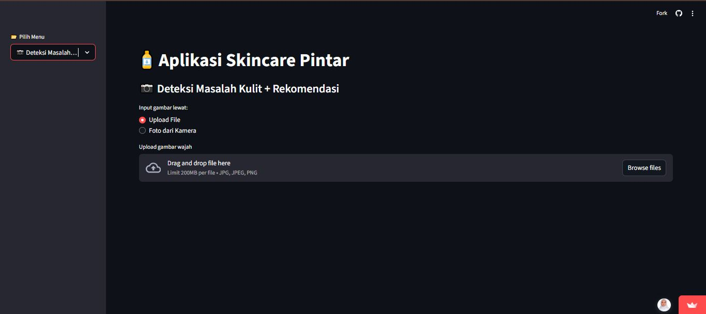

🧴 Smart Skincare Application
Machine Learning-Based Facial Skin Problem Classification and Skincare Product Recommendation

Overview
The Smart Skincare Application is a machine learning-based application that combines a Convolutional Neural Network (CNN) to classify seven facial skin problem categories and Content-Based Filtering to recommend skincare products based on the classification results. Developed with Streamlit, the application provides an interactive interface where users can upload facial images, view predicted skin problem categories, and explore relevant skincare product recommendations.
🎯 Problem Statement & Objective
- Challenge: Choosing suitable skincare products can be challenging because individuals have different skin conditions and skincare needs, compounded by a wide variety of products available on the market.
- Solution: Developed an end-to-end machine learning application integrating a CNN image classification model and a Content-Based Filtering recommendation system into an interactive Streamlit web interface.
📊 CNN Model Performance Metrics
| Evaluation Metric | Result Score |
|---|---|
| Training Accuracy | 93.97% |
| Validation Accuracy | 80.20% |
| Test Accuracy | 79.76% |
| Average Precision / Recall / F1-score | Precision: 0.82 | Recall: 0.81 | F1-score: 0.81 |
💡 Key Technical & Category Insights
- Top-Performing Classes: The model excelled most in classifying Signs of Aging (F1-score: 0.94) and Sensitive or Irritated Skin (F1-score: 0.89).
- Challenging Class: Dry or Dehydrated Skin recorded the lowest F1-score (0.59), indicating higher visual overlap with other categories.
- Model Generalization: The gap between training accuracy (93.97%) and test accuracy (79.76%) highlights performance variations on unseen data, emphasizing that predictions serve as a prototype rather than a definitive medical diagnosis.
⚙️ Development Workflow
Data Collection
Web Scraping (2,450 Images & 700+ Products)
Preprocessing
Resizing, Augmentation & Normalization
CNN & Filtering
Model Training & Content-Based Filtering
App Integration
Streamlit Web Interface Deployment